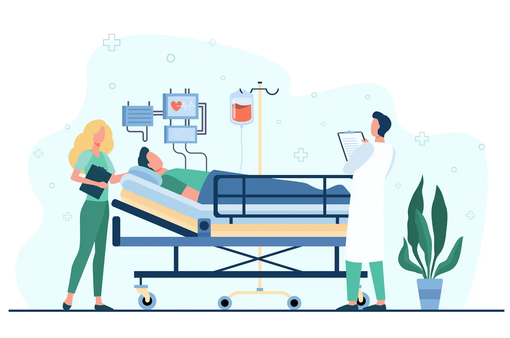
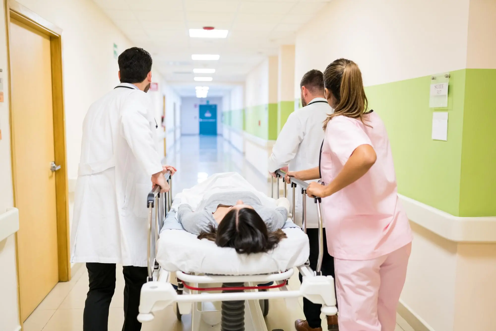
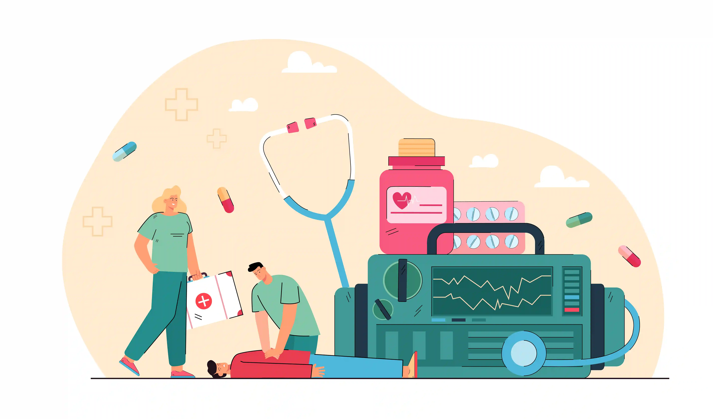

In a medical emergency, the distance to the nearest 24 hours emergency hospital in Ramanathapuram can be the difference between life and death. Whether it is a road accident, a sudden cardiac event, a stroke, or a trauma injury — every second of delay worsens outcomes. Gani Hospital, located near the Ramanathapuram Bus Stand, provides round-the-clock emergency ward Ramanathapuram services with a fully equipped critical care unit Ramnad, experienced doctors, and a dedicated trauma team — available 24 hours, 7 days a week.

Nearest 24 hours emergency hospital in Ramanathapuram, located right near the Bus Stand.
Get Emergency Directions →Medical emergencies do not announce themselves. A road accident on the Ramnad highway, a sudden heart attack in the middle of the night, a child with a severe febrile seizure, or a stroke patient needing immediate intervention — all of these require access to a 24 hours emergency hospital in Ramanathapuram within minutes, not hours.
The concept of the "Golden Hour" in emergency medicine is well-established: the first 60 minutes following a traumatic injury or cardiac event are the most critical for survival and recovery. During this window, every action taken — or delayed — determines the patient's outcome. This is why the proximity of a reliable emergency ward Ramanathapuram is so vital for the residents and travellers passing through Ramanathapuram every day.
Gani Hospital is strategically located near the Ramanathapuram Bus Stand — the central transit point of the district — making it the most accessible best emergency services in Ramanathapuram for patients arriving from every direction across Ramnad district, including Rameswaram, Paramakudi, Mandapam, Keelakarai, and surrounding villages.
⏱️ The Golden Hour: In trauma and cardiac emergencies, receiving care within the first 60 minutes dramatically increases survival rates and reduces the risk of permanent disability. Gani Hospitals emergency team is always ready the moment you arrive.
Gani Hospital provides the most comprehensive best emergency services in Ramanathapuram — covering all categories of medical, surgical, and trauma emergencies. Our emergency ward Ramanathapuram is equipped and staffed for every type of critical situation.
| Emergency Category | Services Provided | Availability |
|---|---|---|
| Trauma Care Ramnad | Road accident injuries, fractures, head trauma, internal bleeding | 24/7 |
| Cardiac Emergencies | Heart attack, cardiac arrest, arrhythmia, chest pain | 24/7 |
| Neurological Emergencies | Stroke, seizures, sudden unconsciousness, severe headache | 24/7 |
| Accident Emergency Ramnad | Road traffic accidents, fall injuries, crush injuries, burns | 24/7 |
| ICU Hospital Near Me | Ventilator support, multi-organ monitoring, post-operative ICU | 24/7 |
| Critical Care Unit Ramnad | Sepsis, respiratory failure, poisoning, multi-trauma stabilisation | 24/7 |
| Paediatric Emergency | Febrile seizures, respiratory distress, severe dehydration in children | 24/7 |
| Obstetric Emergency | Pregnancy complications, labour emergencies, postpartum haemorrhage | 24/7 |
| Poisoning & Overdose | Snake bite, pesticide poisoning, drug overdose, chemical exposure | 24/7 |

Understanding why speed matters in emergency care motivates people to act quickly rather than wait and see. Here is what medical science tells us about time-sensitive emergencies treated at our 24 hours emergency hospital in Ramanathapuram:
Every minute without treatment during a heart attack, approximately 2 million heart muscle cells die permanently. Reaching a best emergency services in Ramanathapuram facility within 90 minutes for clot-busting treatment or angioplasty dramatically improves survival and heart function recovery. Gani Hospitals emergency cardiac team is always on standby.
A stroke patient loses approximately 1.9 million brain neurons every minute without treatment. The phrase "Time is Brain" is not a slogan — it is a clinical fact. Our emergency ward Ramanathapuram performs rapid neurological assessment and initiates stroke protocols immediately upon arrival.
Ramanathapuram sits at the intersection of multiple major highways — including routes connecting Madurai, Tuticorin, and Rameswaram. Road traffic accidents are unfortunately common, and victims require immediate trauma care Ramnad to control bleeding, manage airway, stabilise fractures, and prevent shock. Our accident emergency Ramnad unit handles all levels of trauma severity.
Conditions such as severe asthma attacks, anaphylaxis, or drowning can cause complete respiratory arrest within minutes. Our critical care unit Ramnad is equipped with ventilators, nebulisers, and oxygen therapy systems for immediate respiratory support.
Children deteriorate faster than adults in emergencies. Febrile seizures, choking, severe dehydration, or breathing difficulty in children demand immediate attention from a 24/7 doctor near me with paediatric emergency training. Gani Hospitals emergency team includes doctors experienced in managing all paediatric critical conditions.
After immediate stabilisation in the emergency ward Ramanathapuram, critically ill patients are transferred to the critical care unit Ramnad — our state-of-the-art Intensive Care Unit (ICU) — for continuous monitoring and advanced life support.
Patients searching for an ICU hospital near me in Ramanathapuram will find that Gani Hospital offers one of the most comprehensively equipped ICUs in the district, managed by experienced intensivists and critical care nurses around the clock.
Families across Ramnad district no longer need to travel to Madurai or Chennai for critical ICU care. Gani Hospital — the most accessible ICU hospital near me in Ramanathapuram — provides world-class critical care unit Ramnad services right here at home.
Trauma care Ramnad at Gani Hospital follows a structured, protocol-driven approach — from the moment the patient arrives at our accident emergency Ramnad unit to full stabilisation and surgical intervention if needed.
Our trauma care Ramnad team is trained in Advanced Trauma Life Support (ATLS) principles, ensuring every trauma patient receives a rapid, systematic assessment and intervention within minutes of arrival at our emergency ward Ramanathapuram.
As the best hospital near Ramanathapuram Bus Stand, we receive trauma patients transferred from across the district. Our accident emergency Ramnad facility handles all grades of injury — from minor wounds to life-threatening polytrauma.

When someone in Ramanathapuram searches for a 24/7 doctor near me or the best hospital near Ramanathapuram Bus Stand, Gani Hospital consistently stands out — not just because of our location, but because of the quality and speed of our emergency response.
For every resident, traveller, and family in Ramanathapuram, Gani Hospital is the answer when you need a 24 hours emergency hospital in Ramanathapuram that is close, capable, and fully prepared.
As the best emergency services in Ramanathapuram provider, Gani Hospitals emergency department manages all types of medical crises seen across the Ramnad district. Here are the most common emergency presentations at our emergency ward Ramanathapuram:
Knowing how to respond in the first minutes of a medical emergency can save a life before you even reach the emergency ward Ramanathapuram. Follow these steps:
Time is critical. Gani Hospitals emergency team begins assessment the moment you arrive — no waiting, no delay.
Beyond best emergency services in Ramanathapuram, Gani Hospital offers complete healthcare for all your family's needs:
A medical emergency is not the time to hesitate or search for options. It is the time to act — and act immediately. Gani Hospital, the 24 hours emergency hospital in Ramanathapuram located near the Ramanathapuram Bus Stand, is fully prepared to receive and treat every emergency — from the most minor to the most critical — around the clock.
With a dedicated emergency ward Ramanathapuram, a world-class critical care unit Ramnad, expert trauma care Ramnad protocols, and a 24/7 doctor near me always on duty, Gani Hospitals emergency team is your fastest, safest, and most reliable option for all emergencies in Ramnad district.
Whether you are a resident of Ramanathapuram, a traveller passing through, or a patient being referred from a remote area — remember: the best hospital near Ramanathapuram Bus Stand is Gani Hospital, and we are always ready for you.
Trauma care, ICU, accident emergency & critical care — all available round the clock.
Get Directions & Contact →Is there a 24 hours emergency hospital in Ramanathapuram?
Yes. Gani Hospital is a 24 hours emergency hospital in Ramanathapuram located near the Bus Stand. Our emergency ward Ramanathapuram is fully staffed and equipped round the clock with doctors, nurses, and trauma specialists.
What trauma care services are available at Gani Hospital Ramnad?
Gani Hospital provides complete trauma care Ramnad — including accident emergency Ramnad treatment, surgical trauma management, orthopaedic emergency care, ICU admission, and critical care unit Ramnad monitoring for all injury types.
Does Gani Hospital have an ICU near Ramanathapuram?
Yes. Gani Hospital is a fully equipped ICU hospital near me option in Ramanathapuram, with ventilators, cardiac monitoring, and experienced intensivists managing the critical care unit Ramnad 24/7.
Where is the best hospital near Ramanathapuram Bus Stand for emergencies?
Gani Hospital is the best hospital near Ramanathapuram Bus Stand for all emergencies. We offer a 24/7 doctor near me, dedicated emergency ward Ramanathapuram, trauma care Ramnad, ICU, and the best emergency services in Ramanathapuram under one roof.
What should I do in a medical emergency near Ramanathapuram?
Proceed immediately to Gani Hospital emergency ward near the Ramanathapuram Bus Stand. Our Gani Hospitals emergency team and 24/7 doctor near me are always on duty. In critical emergencies — every minute counts.